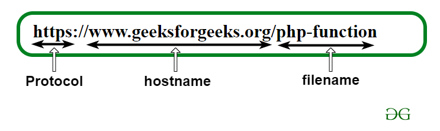
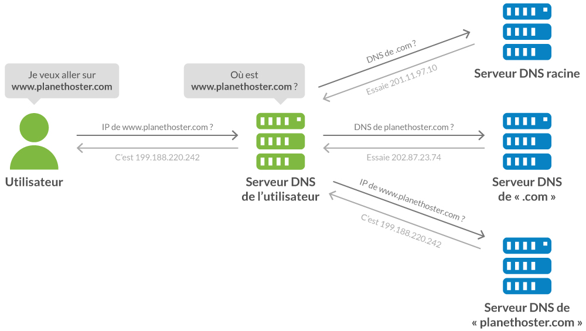

L'URL c'est quoi?
Une URL (Uniform Resource Locator) est l’adresse d’un site web ou d’une page spécifique sur internet. Elle est essentielle pour localiser une page parmi les milliards existantes et se compose de trois parties principales :
1.Protocole et sous-domaine Par exemple, http://www.
2.Nom de domaine : Souvent le nom de la marque ou du produit, comme Orson
3.Extension du domaine : Par exemple, .io, .com, .fr, etc.

Les URL sont cruciales pour l’identité en ligne d’une marque et pour le référencement naturel, car elles aident les moteurs de recherche à identifier le contenu d’une page. Il est important de structurer les URL de manière claire et descriptive pour améliorer la visibilité et l’accessibilité du site.
Pour optimiser le référencement, il est recommandé de vérifier et, si nécessaire, de réécrire les URL pour qu’elles soient compréhensibles et reflètent le contenu de la page. Enfin, le choix du nom de domaine est une étape importante lors de la création d’un site internet, avec des tarifs variés selon les extensions choisies
Les noms de domaine
Un nom de domaine (NDD) est un identifiant pour des ensembles d'ordinateurs sur Internet, facilitant l'accès à des services comme les sites web et le courrier électronique. Il se compose de labels séparés par des points, avec un domaine de premier niveau (TLD) comme .fr ou .com à la fin. Les TLD peuvent être nationaux (ccTLD), génériques (gTLD), ou de nouveaux types créés par ICANN.
domaine de deuxième niveau est généralement le nom choisi (ex. : wikipedia dans wikipedia.org) et peut inclure des sous-domaines (ex. : www). Les noms de domaine doivent être enregistrés auprès de bureaux d'enregistrement pour une période déterminée. Des conflits juridiques peuvent survenir autour de la propriété des noms, incitant les entreprises à enregistrer leurs marques.
Le parking de nom de domaine consiste à rediriger un domaine inutilisé vers des pages de liens publicitaires, permettant de générer des revenus passifs. Ce modèle économique implique plusieurs acteurs, dont des fournisseurs de contenu publicitaire et des prestataires de parking, et se base souvent sur un système de rémunération par clic.
Ce système repose sur des règles techniques et juridiques, visant à assurer une utilisation équitable des noms de domaine sur Internet.
standards du WEB
Les standards du Web sont différentes technologies et protocoles utilisés sur le Web et en particulier ceux définis par le W3C sous forme de recommandations.
Cette expression a été popularisée à partir de la fin des années 1990, à travers des ouvrages de designers tels que Designing With Web Standards de Jeffrey Zeldman1, ainsi que l'action d'associations de professionnels du Web comme le Web Standards Project (WaSP), ou encore en France le collectif Openweb2.
Elle se réfère principalement aux technologies formant le socle principal d'un document web : le HTML et le XHTML, les feuilles de style en cascade (CSS) et le DOM (Document Object Model) ainsi que sa manipulation avec Javascript. Cependant, elle peut également, selon les contextes, s'étendre à un ensemble plus vaste, dont :
AJAX (Asynchronous Javascript and XML)
HTTP (Hypertext Transfer Protocol)
PNG (Portable Network Graphics)
RDF (Resource Description Framework)
SVG (Scalable Vector Graphics)
SMIL (Synchronized Multimedia Integration Language)
URI (Uniform Resource Identifier)
XML (Extensible Markup Language)
WCAG (Web Content Accessibility Guidelines)
Les différentes méthodes de piratage
Phishing : Utilisation de courriels trompeurs pour voler des informations personnelles, avec des variantes comme le spear phishing, whaling, smishing, vishing et angler phishing.
par Déni de Service (DoS et DDoS) : Visent à rendre des services inaccessibles en les surchargeant de demandes, DDoS étant plus complexe.
de Fraude : Incluent le "bait and switch" (publicités malveillantes) et le vol de cookies (accès non autorisé aux sessions).
Malware: Comprend des virus, chevaux de Troie, ransomwares, etc., qui causent des dommages ou volent des données.
Attaques Spécifiques : Comme le clickjacking (vol d'infos via manipulation) et les faux réseaux Wi-Fi pour intercepter des données.
Autres Menaces : Incluent l'écoute clandestine, les attaques par injection SQL, les keyloggers, et l'usurpation DNS.
La conclusion souligne l'évolution constante des cybermenaces et l'importance de la vigilance et des protections adéquates.
développeur
Le développeur web est chargé de la programmation et de la création de sites internet, d'applications, de logiciels ou de programmes adaptés aux besoins spécifiques de son entreprise ou de ses clients. Pour ce faire, il commence par étudier les attentes et réfléchir à la manière dont le programme sera utilisé, avec l'objectif d'assurer une bonne expérience utilisateur. Il élabore ensuite un document détaillé (cahier des charges) qui précise toutes les étapes de création avant de les traduire en code. Il procède alors à des tests et, la plupart du temps, il doit ajuster et corriger les erreurs en fonction des demandes des clients.
Une fois le site, l'application ou le programme créé, le développeur est également responsable de sa maintenance et de ses éventuelles mises à jour. Il veille à son bon fonctionnement et doit intervenir rapidement en cas de bugs pour éviter que cela n'affecte les utilisateurs. Si ses compétences le permettent, il optimise également l'affichage pour les appareils mobiles.
Le développeur a également un rôle de formateur. Il peut rédiger des guides pratiques afin que les utilisateurs comprennent mieux le fonctionnement des programmes. Ces documents sont également utiles pour les anciens utilisateurs à éviter ou résoudre des problèmes, que ce soit individuellement ou dans le cadre de formations po.
Les différents termes specifiques
JSON:(JavaScript Object Notation) est un format texte simple et lisible, utilisé pour stocker et échanger des données. Bien qu'il soit conçu pour JavaScript, il est devenu largement adopté pour l'échange de données entre différentes plateformes et langages. JSON est essentiel pour les développeurs web, les analystes de données et les ingénieurs logiciels.

NDS(domain name system): Le système de noms de domaine (DNS) a été conçu pour faciliter la recherche d'un site sur Internet en associant un nom compréhensible (nom de domaine) à une adresse IP, qui est unique. Cela permet d'éviter d'avoir à retenir des adresses IP complexes et d'assurer que les messages atteignent le bon destinataire.
deux types de serveurs sont utilisés dans ce processus :
Serveur faisa autorité : Il connaît le contenu d'un domaine spécifique et peut répondre directement aux requêtes pour ce domaine (ex : les serveurs de l'AFNIC connaissent les domaines en .fr).
Résolveur ou serveur récursif : Il ne connaît pas les informations d'un domaine, mais interroge les serveurs faisant autorité pour obtenir la réponse et mémorise ces informations pour de futures requêtes (souvent utilisé chez les fournisseurs d'accès Internet ou sur les réseaux locaux).

Contactez-nous
Si vous avez des questions, n'hésitez pas à nous contacter via ce formulaire de contact.